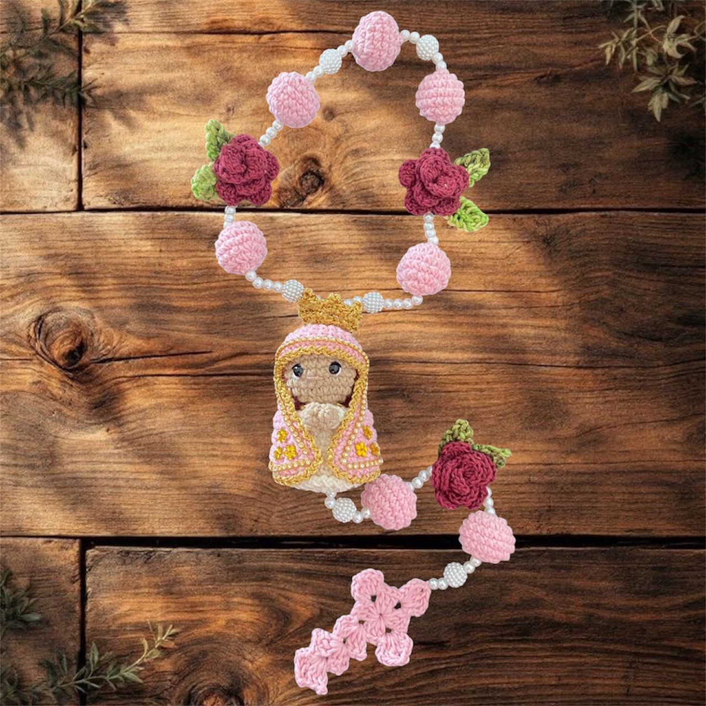
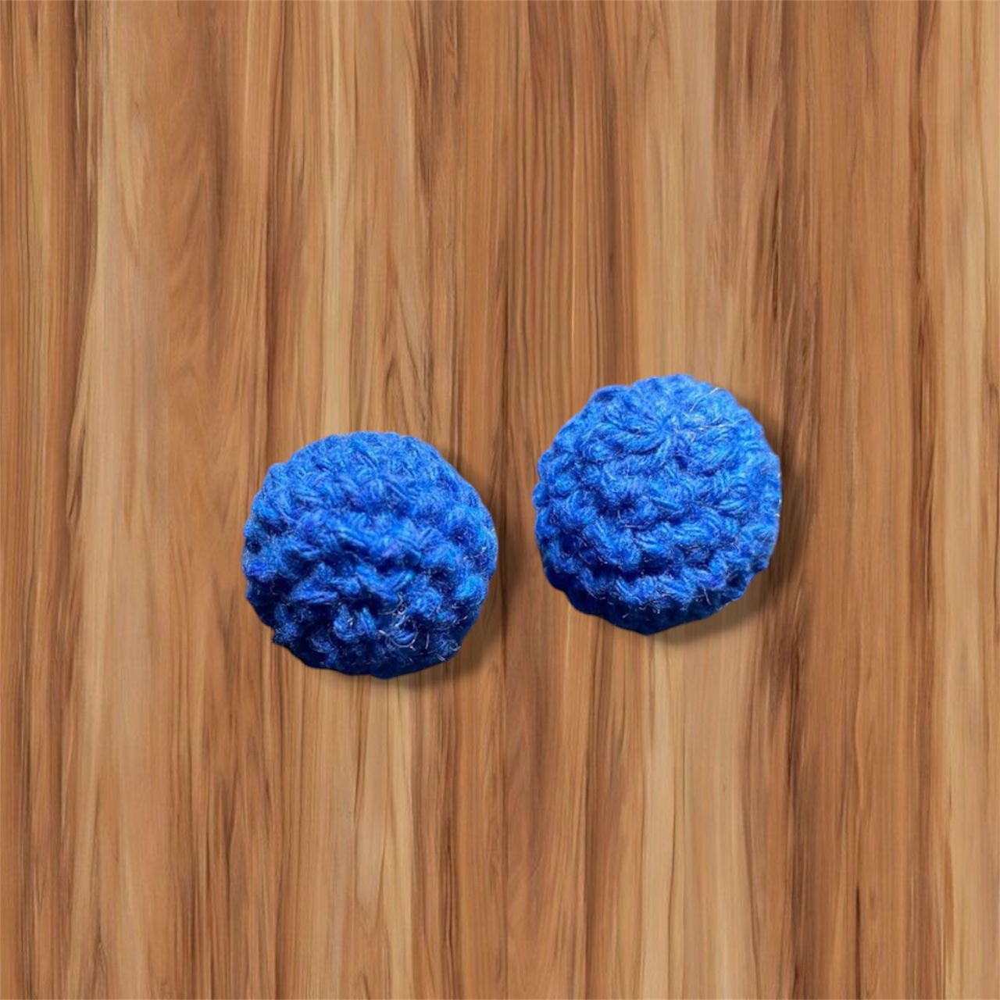
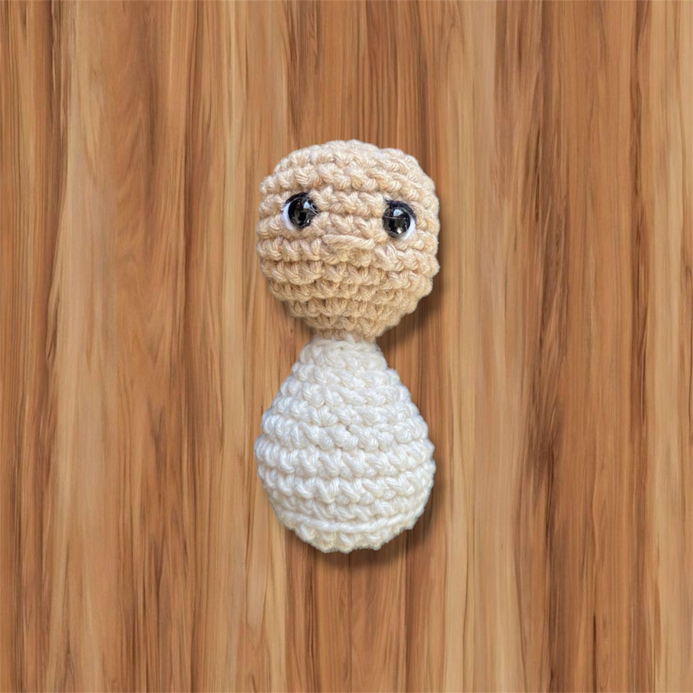
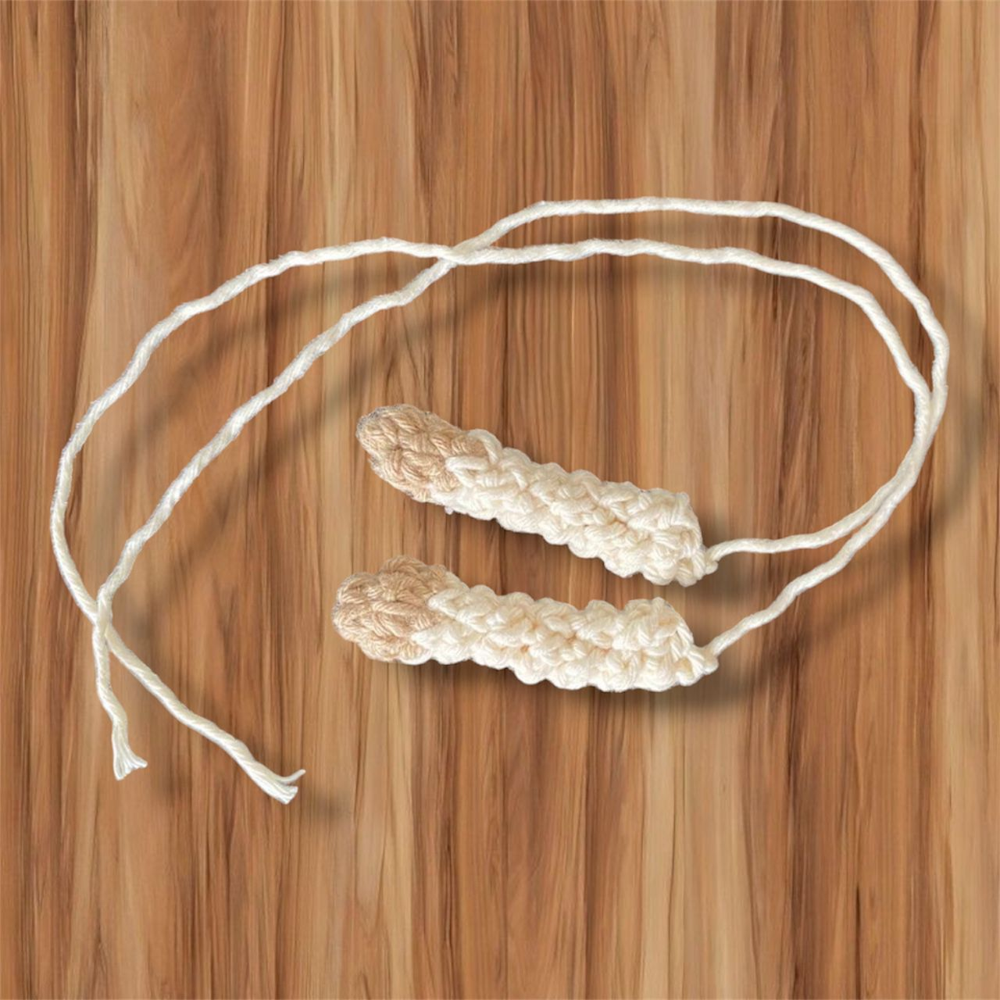
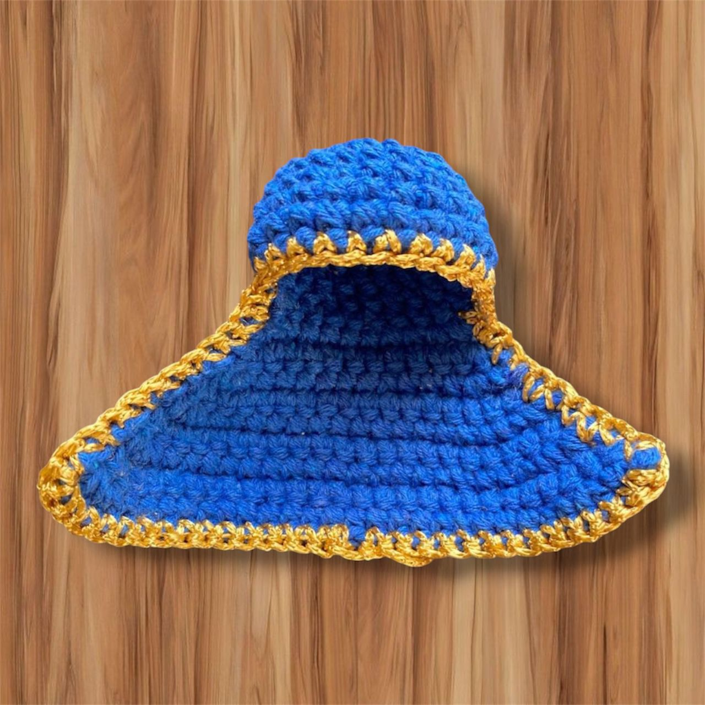
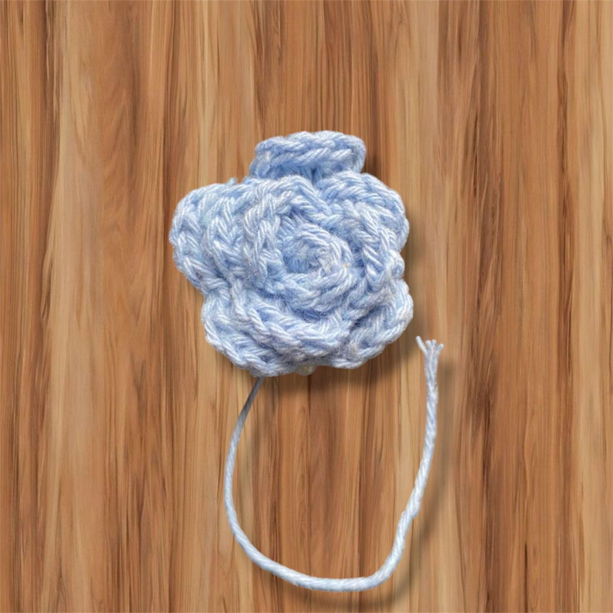
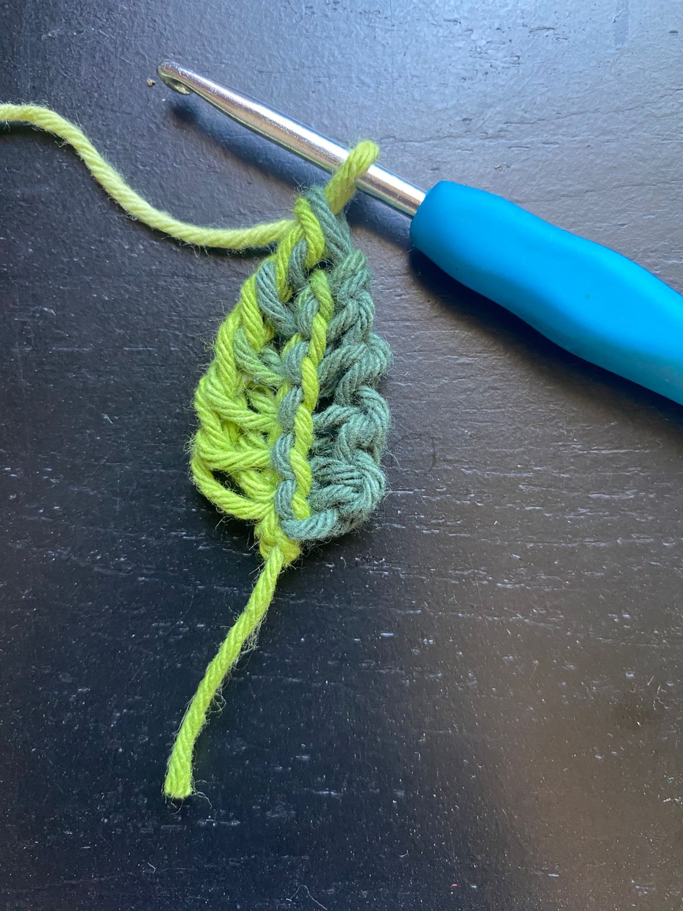
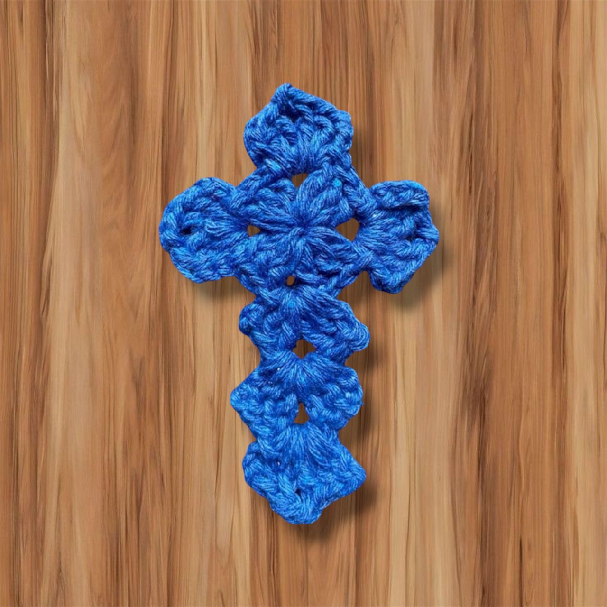

Receita de Terço Santinha de Amigurumi Passo a Passo

Materiais
- Fio cor off white
- Fio cor azul royal
- Fio cor porcelana
- Fio cor azul bebê
- Fio mesclado folha
- Fio encanto slim
- Fio preto para bordado
- Agulha 2,5mm
- Agulha de tapeçaria
- Tesoura
- Cola silicone
- Enchimento fibra de poliester
- Olhos com trava ou meia pérola 6mm

Fazer 12 unidades de Bolinhas
- 1ª: Anel Mágico (AM) com 6 pb
- 2ª: 6 aum (12 pt)
- 3ª: (1 pb, 1 aum) x6 (18 pt)
- 4ª e 5ª: 18 pb
- 6ª: (1 pb, 1 dim) x6 (12 pt)
- 7ª: 6 dim (6 pt)
- Encher e arrematar.

Corpo
- 1ª: AM com 6 pb
- 2ª: 6 aum (12 pt)
- 3ª: (1 pb, 1 aum) x6 (18 pt)
- 4ª: (2 pb, 1 aum) x6 (24 pt)
- 5ª: 24 pb em BLO
- 6ª e 7ª: 24 pb (2 carreiras)
- 8ª: (2 pb, 1 dim) x6 (18 pt)
- 9ª: 18 pb sem dim
- 10ª: (1 pb, 1 dim) x6 (12 pt)
- 11ª: 12 pb sem dim
- 12ª: (1 pb, 1 dim) 4x (8 pt)
- Troca de cor
Cabeça
- 13ª: 8 pb sem aum
- 14ª: (1 pb, 1 aum) 4x (12 pt)
- 15ª: (1 pb, 1 aum) 6x (18 pt)
- 16ª: (2 pb, 1 aum) 6x (24 pt)
- 17ª a 21ª: 24 pb (5 carreiras sem aum)
- 22ª: (2 pb, 1 dim) 6x (18 pt)
- 23ª: (1 pb, 1 dim) 6x (12 pt)
- 24ª: 6 dim (6 pt)
- Encher e arrematar.

Braços (2x)
- 1ª: AM com 5 pb
- 2ª: 5 pb
- Troca de fio
- 3ª: 5 pb em BLO
- 4ª a 8ª: 5 carreiras de 5 pb
- Deixar fio para costura.

Manto
- 1ª: AM com 6 pb
- 2ª: 6 aum (12 pt)
- 3ª: (1 pb, 1 aum) x6 (18 pt)
- 4ª: (2 pb, 1 aum) x6 (24 pt)
- 5ª a 8ª: 24 pb (4 carreiras)
- 9ª: 10 pb
- 10ª: 1 aum, 8 pb, 1 aum (12 pt)
- 11ª: 1 aum, 10 pb, 1 aum (14 pt)
- 12ª: 2 aum, 10 pb, 2 aum (18 pt)
- 13ª: 18 pb sem aum
- 14ª: 2 aum, 14 pb, 2 aum (22 pt)
- 15ª: 22 pb sem aum
- 16ª: 2 aum, 18 pb, 2 aum (26 pt)
- 17ª: 26 pb sem aum
- 18ª: 2 aum, 22 pb, 2 aum (30 pt)
- 19ª: Dar a volta pelo manto com pontos baixíssimos.

Mini Rosa
- 1ª: 31 correntinhas.
- 2ª: Carreira de pb, ponto sobre ponto.
- 3ª: 4 correntinhas, pula 2 pt, 1 pb, 3 correntinhas, pula 2 pt... ficando com 10 alças.
- Vira o trabalho: 1 pb, faz 5 PA (ponto alto), 1 pb na próxima alça, 1 pb, 5 PA, 1 pb...
- Corta e deixa fio para costurar. Enrole para formar a rosa.

Folha
- Inicia com 6 correntinhas, volta na 2ªcorr laça uma alça, e segue laçando ficando com 6 alças na agulha e vem tirando de 2 em 2 pontos. Vira e no outro lado repete

Cruz
- No AM (Anel Mágico): suba 3corr e faça 3pa, (2corr, 4pa) 3x, 2 corr pbx na terceira corr onde começamos.
- Agora iremos dar forma a cruz
- 4pbx, dentro das 2 corr faça: (3pa, corr, 2pa, 2corr, pbx).
- 4pbx, dentro das 2 corr faça: (3pa, corr, 2pa, 2corr, pbx).
- 4pbx, dentro das 2 corr faça: (3pa, corr, 2pa, 2corr, pbx).
- 4pbx, dentro das 2 corr faça: (3pa, 2corr, 2pa, 2corr, pbx), faça 1corr e gire o trabalho.
- Vamos fazer a parte de baixo da cruz
- 3pbx, dentro das 2corr faça: 3pa, corr, 2pa, 2corr, pbx, 2pbx.
- Arremate e esconda o fio.